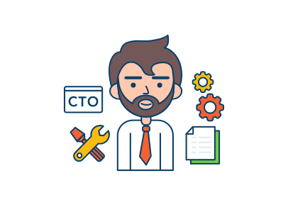

Kevin Joel Noviello
kjnoviello@gmail.com
11/06/1998
Av. Corrientes 2980, Argentina
Sobre Mí
Soy un director ejecutivo de 37 años que disfruta correr, rezar y cumplir con las metas. Soy responsable y leal, pero también puedo ser un poco impaciente. Tengo una licenciatura en ciencias empresariales. Me considero un fanático de Star Wars.
Crecí en un barrio de clase trabajadora. Después de que mi padre muriera cuando era joven, fui criado por mi madre. Actualmente estoy casado con Sofía Beltramo. Sofía es 5 años menor que yo y trabaja como asistente ejecutiva.
Estudios
Universidad Siglo Veintiuno:
Licenciatura en Gestión de Recursos Humanos.
2010 - 2023
Universidad Nacional de Córdoba:
Curso en inglés profesional.
2005 - 2010
Experiencia
Asistente de Gerente: Mi primer trabajo! Nada más emocionante que acompañar a la gerencia de Marketing de Accenture, Bs As por dos años desde 2005. Aquí aprendí el valor de la responsabilidad y el trabajo en equipo
IT Recruiter: Trabajé desde 2007 por 3 maravillosos años en Humanitas IT, Bs As donde desarrollé aptitudes como Sourcing, Entrevistas, Selección de personal.
Director de RRHH: En 2010 tuve la gran oportunidad de entrar en Asorum Group, Bs As donde puedo desenvolver todo mi potencial y alcanzar nuevas habilidades para lograr nuevos objetivos.

Creatividad

Trabajo en equipo

Resolución de problemas

Liderazgo
Motivación

Adaptabilidad
Contacto